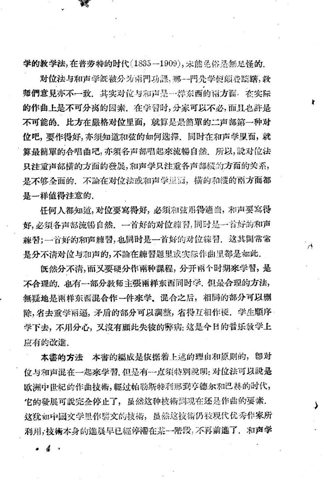

PDF 第 13 页
导言
学的教学法，在普劳特的时代（1835一1909），米能免俗是然足怪的
对位法与和声学既被分为雨門功课，那一門先学便顾蓉踪購，教
师們意見亦不一致.其实对位与和声是一样东西的雨方面，在实际
的作曲上是不可分离的因素.在学替时，分蒙可以不必，前且也許是
不可能的.比方在最格对位里面，就算是最簡單的二声部第一种对
位吧，要作得好，亦须知道和弦的如何选選，同时在和声学里面，就
算最簡單的合唱曲吧，亦须各声部唱起來流蜴自然.所以，对位法
只注重声部横的方面的發展，和声学只注重各声部的方面的关系，
是不够全面的.不论在对位法或和声学望面，横的和赞的两方面都
是一样值得注意的.
任何人都知道，对位要寫得好，必须和弦用得適当，和声要寫得
好，必须各声部流自然.一首好的对位留，同时是一首好的和声
習；一首好的和声棘習，也同时是一首好的对位颖留.这其間常常
是分不清对位与和声的，不在習题里或实际作曲里都是如此，
既然分不满，而又要硬分作雨种課程，分开雨个时期学習，是
不合理的.也有一部分教师主张雨样东西同时学，但最合理的方法，
無疑地是雨样东西混合作一件來学.混合之后，相同的部分可以删
除，省去重学雨逼，矛盾的部分可以整，省得互相作硬.学生顺序
学下去，不用分心，叉有此失彼的病：这是今日的普乐教学上
应有的改進。
本鑫的方法本害的成是依据着上越的理由和原则的，即对
位与和声混在一起來学習.但是有-一点特别明：对位法可以是
欧洲中世纪的作曲技，經过帕勒斯特利那到享德尔和巴赫的时代，
它的發展可完全停止了，虽然这种技到現在还是作曲的要素
这犹如中國文学里作骄文的技，虽然这技销仍被现代优秀作家所
利用，技術本身的進展早已經停滞在某一陪段，不再前進了，和声学
·4。
- 对位规则依附于当时的调式与和声语言
分类对位不是超历史的自然法。文艺复兴调式、巴洛克大小调与二十世纪音高组织，会改变什么算协和、什么算必须解决的 dissonance。
“对位法可以是欧洲中世纪的作曲技，經过帕勒斯特利那到享德尔和巴赫的时代，它的發展可完全停止了”